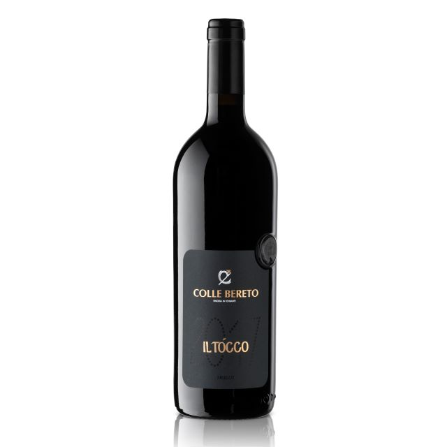

Вино Colle Bereto
Имение Colle Bereto расположено в самом сердце исторической зоны Кьянти Классико (Радда ин Кьянти), приблизительно в тридцати километрах от Сиены и сорока от Флоренции. Вокруг до горизонта расстилается типичный тосканский пейзаж, в котором на склонах холмов виноградники чередуются с древними оливковыми рощами.
Первое упоминание о поместье Colle Bereto относится еще к XI веку. История же современного предприятия начинается в конце семидесятых годов прошлого века, когда имение приобрела семья Пинцаути, которая постепенно начала развивать виноградники и совершенствовать процесс производства вина и оливкового масла. Сегодня вина и масло Colle Bereto хорошо известны в Италии и далеко за ее пределами. Залогом успеха стало сотрудничество с авторитетным в мире вина энологом Николо Д’ Аффлито, с которым семья Пинцаути сотрудничает с 1994 года.
Общая площадь виноградников и оливковых полей в поместье составляет 20 гектар.
Большую часть посадок занимает сорт Санджовезе, который идет на производство Кьянти Классико. На остальных землях растут Мерло, Пино Неро, Колорино, Шардоне и Пино Бьянко.
Chianti Classico
Chianti Classico DOCG /Кьянти Классико ДОКГ.
Сорта винограда: Санджовезе 97%, Колорино 3%.
Выдержка: 12 месяцев в маленьких дубовых бочках, 6 месяцев в бутылках
Богатое и гармоничное во вкусе, с ароматами цветов, черных ягод и кожи. Потрясающее долгое послевкусие.
Потенциал -20 -25 лет.
Награды: Chainti Classico 2017 — 94 балла по Wine Spectator.
Chianti Classico Riserva
Chianti Classico Riserva DOCG/ Кьянти Классико Ризерва ДОКГ.
Визитная карточка и гордость Colle Bereto.
Сорт винограда: Санджовезе 100%.
Выдержка: 36-48 месяцев в больших дубовых бочках, 3 месяца в бутылках.
Богатое, сочное и бархатистое во вкусе. Ароматы ежевики, граната, кофейных зерен, розмарина, тимьяна с минеральными оттенками. Потрясающее послевкусие.
Потенциал 20-25 лет.
Награды: Chianti Classico Riserva 2015 — 95 баллов по Wine Spectator
Il Tocco

Il Tocco IGT/ Иль Токко ИГТ.
Supertuscan от Colle Bereto.
Сорт винограда: Мерло 100%.
Винификация в дубовых чанах.
Выдержка: 14-16 месяцев в маленьких дубовых бочках, 6 месяцев в бутылках.
Комплексное и бархатистое во вкусе. Ароматы вишни, черных ягод, графита. Долгое волнующее послевкусие.
Потенциал 10-15 лет.
Награды: Il Tocco 2017 — 94 балла по Wine Spectator.
Il Cenno
Il Cenno IGT/ Иль Ченно ИГТ.
Сорт винограда: Пино Нуар 100%.
Винификация в дубовых чанах.
Выдержка: 14-16 месяцев в маленьких дубовых бочках, 6 месяцев в бутылках.
Элегантное бархатистое во вкусе. Ароматы клубники, малины, бальзамические оттенки. Долгое послевкусие.
Olio Extravergine di Oliva
Оливковое масло экстраверджине
Это великолепное масло обладает безупречными органолептическими характеристиками, различные нюансы в его аромате и вкусе великолепно отражают терруарные особенности. Цвет интенсивно зеленый. Аромат фруктовый, яркий, с нотками свежескошенной травы, бобов и артишоков. Вкус немного острый с пикантной горчинкой в послевкусии.
Масло первого холодного отжима производится из оливок сорта Франтойо с добавлением Леччино и Морайоло выращенных в имении Colle Bereto в самом сердце исторической зоны Chianti Classico . Оливковые рощи расположены на высоте 150 - 250 метров над уровнем моря. Для создания этого масла отбирают только самые лучшие, хорошо вызревшие плоды, которые собирают вручную в первую неделю ноября. В течение 24 часов проводится холодный отжим. Благодаря легкой фильтрации в масле сохраняются все витамины, присутствовавшие в оливках.
Превосходно для приготовления салатов.